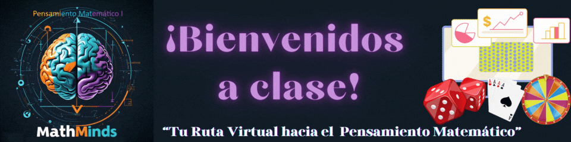

“MathMinds”
Pensamiento Matemático I
Introducción
Cada progresión de aprendizaje articula los contenidos y habilidades del Pensamiento Matemático que deberán abordarse a lo largo del semestre y buscarse desarrollar en el estudiantado. Las categorías y subcategorías orientan la práctica docente hacia el favorecimiento de este tipo de pensamiento en las y los estudiantes. Cada progresión tiene asociada una o más metas de aprendizajes, las cuales no tienen por qué leerse como una camisa de fuerza sino como una sugerencia orientadora, por eje rector de una práctica exitosa se tiene que buscar un equilibrado trabajo en cada una de las cuatro categorías del pensamiento matemático a lo largo del semestre.
Las progresiones de aprendizaje de Pensamiento Matemático cuentan con anotaciones didácticas, las cuales son sugerencias para su abordaje. En el caso de Pensamiento Matemático I, de las anotaciones didácticas se deduce el enfoque adecuado para trabajar el pensamiento estadístico y probabilístico en primer semestre, a saber, aquel enfoque basado en las simulaciones de eventos aleatorios y el acercamiento a la probabilidad a través de frecuencias. Estas anotaciones pueden encontrarse en el documento de Progresiones de Aprendizaje del Recurso Sociocognitivo Pensamiento Matemático y son fundamentales para lograr dimensionar el nivel con que se estará abordando cada progresión. En la siguiente liga se encuentra el documento antes referido, así como también el documento de Orientaciones Pedagógicas del Recurso Sociocognitivo de Pensamiento Matemático: https://tinyurl.com/2kjlfhnv.
Con el planteamiento de las progresiones de aprendizaje se especifica el qué enseñar, aprender y el qué desarrollar en Pensamiento Matemático para todos los subsistemas de la EMS en el país, sin hacer distinción de las modalidades del bachillerato. A continuación, se presentan cada una de las 15 progresiones que corresponde al programa de estudios de Pensamiento Matemático I, así como las relaciones con las metas, categorías y subcategorías.
Video Introductorio
Progresiones
Te presentamos las progresiones de la UAC
Obra publicada con Licencia Creative Commons Reconocimiento 4.0